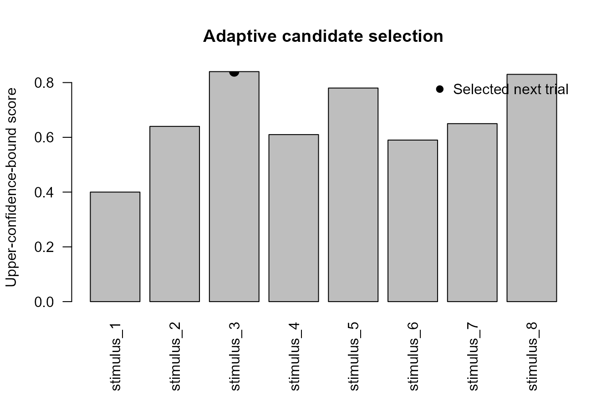

Experimental Bayesian bridge helpers
Source:vignettes/articles/experimental-bayesian-bridges.Rmd
experimental-bayesian-bridges.RmdThe experimental bridge helpers connect gp3tools outputs
with optional Bayesian and machine-learning workflows while keeping
heavy external dependencies outside the core package.
The helpers support reproducible preparation and diagnostics. They do not make an external model automatically valid, and they do not replace domain-specific validation.
Optional brms fitting
fit_gazepoint_brms_model() calls
brms::brm() only when brms is installed. A
complete fit can also require a working Stan backend, appropriate
priors, sufficient sampling, and convergence assessment.
The following is a template and is not evaluated while the article is built:
fit <- fit_gazepoint_brms_model(
data = model_data,
formula = pupil_peak ~ condition + (1 | subject),
family = "gaussian",
chains = 4,
iter = 2000,
warmup = 1000,
cores = 4,
backend = "cmdstanr"
)
summary(fit)For documentation or preregistration, users can first create a dependency-free template:
dwell_template <- create_gazepoint_brms_template(
metric_type = "dwell_time",
outcome = "claim_dwell_ms",
condition = "condition",
subject = "subject",
item = "stimulus"
)
dwell_template
#> $metric_type
#> [1] "dwell_time"
#>
#> $formula
#> [1] "claim_dwell_ms ~ condition + (1 | subject) + (1 | stimulus)"
#>
#> $family
#> [1] "lognormal()"
#>
#> $priors
#> [1] "prior(normal(0, 1), class = \"b\")"
#> [2] "prior(exponential(1), class = \"sd\")"
#>
#> $notes
#> [1] "Template only; adapt priors to the scale of the outcome."
#> [2] "Check missingness, distributional shape, and convergence diagnostics."
#> [3] "Prefer optional brms/Stan use outside the core package workflow."Generate an HDDM fitting script
The R package does not import HDDM or execute Python. Instead, it can create a reproducible Python script from an HDDM-ready CSV export.
hddm_data <- data.frame(
subj_idx = rep(
1:4,
each = 8
),
rt = runif(
32,
min = 0.45,
max = 1.40
),
response = sample(
c(
0,
1
),
32,
replace = TRUE
),
target_dwell_ms_z = rnorm(32),
pupil_peak_z = rnorm(32)
)
head(hddm_data)
#> subj_idx rt response target_dwell_ms_z pupil_peak_z
#> 1 1 0.8035885 0 1.0078658 0.42260433
#> 2 1 0.4916336 1 -2.0731065 0.38683529
#> 3 1 1.1241998 1 1.1898534 -0.68779833
#> 4 1 1.0748059 1 -0.7243742 0.14890249
#> 5 1 0.6873629 1 0.1679838 -0.05764975
#> 6 1 0.7350521 0 0.9203352 -0.07482336
tmp_csv <- tempfile(
fileext = ".csv"
)
tmp_py <- tempfile(
fileext = ".py"
)
utils::write.csv(
hddm_data,
tmp_csv,
row.names = FALSE
)
create_gazepoint_hddm_fit_script(
data_file = tmp_csv,
output_file = tmp_py,
regressions = c(
v = "target_dwell_ms_z",
a = "pupil_peak_z"
),
draws = 1000,
burn = 500
)
readLines(
tmp_py,
n = 18
)
#> [1] "import hddm"
#> [2] "import pandas as pd"
#> [3] ""
#> [4] "data = pd.read_csv(r\"/tmp/RtmpNdLrKQ/file4c41647b6209.csv\")"
#> [5] ""
#> [6] "reg_models = ["
#> [7] " {\"model\": \"v ~ 1 + target_dwell_ms_z\", \"link_func\": lambda x: x},"
#> [8] " {\"model\": \"a ~ 1 + pupil_peak_z\", \"link_func\": lambda x: x}"
#> [9] "]"
#> [10] ""
#> [11] "model = hddm.HDDMRegressor("
#> [12] " data,"
#> [13] " reg_models,"
#> [14] " include=[\"v\", \"a\", \"t\"],"
#> [15] " group_only_regressors=False"
#> [16] ")"
#> [17] ""
#> [18] "model.sample(draws=1000, burn=500, dbname=\"hddm_traces.db\", db=\"pickle\")"The generated script should be archived with the analysis and executed in a documented HDDM environment. The HDDM version, Python environment, model parameterization, sampling settings, convergence checks, and posterior predictive assessment should be reported.
Select an adaptive trial
select_gazepoint_adaptive_trial() implements lightweight
acquisition rules when candidate-level posterior means and uncertainties
have already been estimated.
candidates <- data.frame(
stimulus = paste0(
"stimulus_",
1:8
),
posterior_mean = c(
0.20,
0.32,
0.28,
0.45,
0.38,
0.31,
0.41,
0.35
),
posterior_sd = c(
0.10,
0.16,
0.28,
0.08,
0.20,
0.14,
0.12,
0.24
)
)
selected <- select_gazepoint_adaptive_trial(
candidates = candidates,
mean = "posterior_mean",
sd = "posterior_sd",
acquisition = "ucb",
kappa = 2
)
selected
#> stimulus posterior_mean posterior_sd acquisition_score
#> 3 stimulus_3 0.28 0.28 0.84
scored <- candidates
scored$acquisition_score <-
scored$posterior_mean +
2 * scored$posterior_sd
bar_positions <- barplot(
scored$acquisition_score,
names.arg = scored$stimulus,
las = 2,
ylab = "Upper-confidence-bound score",
main = "Adaptive candidate selection"
)
selected_index <- match(
selected$stimulus,
scored$stimulus
)
points(
bar_positions[selected_index],
selected$acquisition_score,
pch = 19,
cex = 1.4
)
legend(
"topright",
legend = "Selected next trial",
pch = 19,
bty = "n"
)
Adaptive selection requires a prespecified acquisition rule and appropriate guardrails for stimulus balance, participant burden, stopping rules, and confirmatory inference.
Lightweight HMM event classification
classify_gazepoint_events_hmm() estimates gaze velocity
and applies a lightweight unsupervised hidden-state classifier.
It is suitable for exploratory diagnostics and method-development workflows. It is not a replacement for a validated fixation/saccade detector.
n <- 90
gaze <- data.frame(
subject = "S01",
time_ms = seq_len(n) * 16,
x = cumsum(
c(
rnorm(
30,
mean = 0.05,
sd = 0.02
),
rnorm(
25,
mean = 4.00,
sd = 0.80
),
rnorm(
35,
mean = 0.40,
sd = 0.10
)
)
) + 500,
y = cumsum(
c(
rnorm(
30,
mean = 0.04,
sd = 0.02
),
rnorm(
25,
mean = 3.50,
sd = 0.70
),
rnorm(
35,
mean = 0.30,
sd = 0.10
)
)
) + 300
)
head(gaze)
#> subject time_ms x y
#> 1 S01 16 500.0411 300.0363
#> 2 S01 32 500.1184 300.0720
#> 3 S01 48 500.1784 300.1079
#> 4 S01 64 500.2121 300.1823
#> 5 S01 80 500.2674 300.2263
#> 6 S01 96 500.3056 300.2766
events <- classify_gazepoint_events_hmm(
data = gaze,
x = "x",
y = "y",
time = "time_ms",
subject = "subject",
n_states = 3,
state_labels = c(
"slow",
"medium",
"fast"
)
)
table(
events$hmm_event,
useNA = "ifany"
)
#>
#> fast medium slow <NA>
#> 25 35 29 1
event_symbol <- match(
events$hmm_event,
c(
"slow",
"medium",
"fast"
)
)
plot(
events$x,
events$y,
type = "l",
xlab = "Screen x-coordinate",
ylab = "Screen y-coordinate",
main = "Synthetic gaze path and HMM states"
)
valid_event <- !is.na(event_symbol)
points(
events$x[valid_event],
events$y[valid_event],
pch = event_symbol[valid_event]
)
legend(
"topleft",
legend = c(
"Slow",
"Medium",
"Fast"
),
pch = 1:3,
bty = "n"
)
plot(
events$time_ms,
events$gaze_velocity,
type = "h",
xlab = "Time (ms)",
ylab = "Coordinate velocity per millisecond",
main = "Velocity used by the HMM classifier"
)The state labels are relative to the observed sequence. They should not be treated as universal fixation, pursuit, and saccade labels without external validation.
Gaussian-process pupil imputation
impute_gazepoint_pupil_gp() performs within-sequence
interpolation with a Gaussian-process smoother.
The intended use is limited reconstruction of short missing intervals after artifact and blink detection. Long unusable intervals should ordinarily remain missing or trigger trial-level review.
pupil <- data.frame(
subject = "S01",
trial = 1,
time_ms = seq(
0,
1500,
by = 25
)
)
pupil$pupil_mm <-
3 +
0.18 *
exp(
-((pupil$time_ms - 650) / 280)^2
) +
rnorm(
nrow(pupil),
sd = 0.015
)
pupil$pupil_mm[
pupil$time_ms >= 425 &
pupil$time_ms <= 550
] <- NA_real_
pupil$pupil_mm[
pupil$time_ms >= 900 &
pupil$time_ms <= 975
] <- NA_real_
head(pupil)
#> subject trial time_ms pupil_mm
#> 1 S01 1 0 2.995830
#> 2 S01 1 25 3.012414
#> 3 S01 1 50 2.997155
#> 4 S01 1 75 2.999140
#> 5 S01 1 100 2.986310
#> 6 S01 1 125 3.001754
imputed <- impute_gazepoint_pupil_gp(
data = pupil,
pupil = "pupil_mm",
time = "time_ms",
subject = "subject",
trial = "trial",
max_train = 80
)
table(
imputed$pupil_was_gp_imputed
)
#>
#> FALSE TRUE
#> 51 10
plot(
imputed$time_ms,
imputed$pupil_gp_imputed,
type = "l",
lwd = 2,
xlab = "Time (ms)",
ylab = "Pupil size (mm)",
main = "Gaussian-process pupil imputation"
)
observed <- !is.na(
imputed$pupil_mm
)
was_imputed <-
imputed$pupil_was_gp_imputed
points(
imputed$time_ms[observed],
imputed$pupil_mm[observed],
pch = 16
)
points(
imputed$time_ms[was_imputed],
imputed$pupil_gp_imputed[was_imputed],
pch = 1,
cex = 1.3
)
legend(
"topright",
legend = c(
"GP-completed series",
"Observed samples",
"Imputed samples"
),
lty = c(
1,
NA,
NA
),
pch = c(
NA,
16,
1
),
bty = "n"
)The imputation flag should be retained so the percentage and location of reconstructed samples can be audited.
CNN and webcam uncertainty filtering
filter_gazepoint_cnn_uncertainty() post-processes
externally generated gaze coordinates. It does not train or validate a
webcam or convolutional neural network.
cnn <- data.frame(
frame = 1:120,
x = 500 + cumsum(
rnorm(
120,
sd = 3
)
),
y = 300 + cumsum(
rnorm(
120,
sd = 2
)
),
uncertainty = c(
runif(
100,
0.05,
0.40
),
runif(
20,
1.20,
3.00
)
)
)
cnn$x[
sample(
seq_len(nrow(cnn)),
5
)
] <- NA_real_
filtered <- filter_gazepoint_cnn_uncertainty(
data = cnn,
x = "x",
y = "y",
uncertainty = "uncertainty",
max_uncertainty = 1
)
table(
filtered$cnn_valid_frame
)
#>
#> FALSE TRUE
#> 25 95
plot(
filtered$x,
filtered$y,
pch = 16,
cex = 0.5 +
2 * filtered$cnn_uncertainty_weight,
xlab = "Predicted x-coordinate",
ylab = "Predicted y-coordinate",
main = "Webcam/CNN predictions weighted by uncertainty"
)
plot(
filtered$frame,
filtered$cnn_uncertainty_weight,
type = "h",
xlab = "Frame",
ylab = "Uncertainty weight",
main = "Frame-level uncertainty weights"
)
abline(
h = 0,
lty = 3
)Invalid frames receive zero weight. Nevertheless, an uncertainty threshold is not a substitute for calibration, accuracy, precision, latency, demographic bias, head-pose, illumination, and out-of-distribution validation.
Practical reporting boundary
For an external Bayesian or machine-learning analysis, report:
- external software and version;
- computational environment;
- model formula and parameterization;
- prior distributions;
- chain, iteration, and warmup settings;
- convergence and posterior predictive diagnostics;
- adaptive-selection or stopping rule;
- event-classification validation;
- missingness and imputation rules;
- uncertainty definition and threshold;
- sensitivity analyses;
- the distinction between exploratory and confirmatory outputs.
These bridge helpers improve preparation and auditability. They do not make advanced models automatically robust, causal, confirmatory, or psychologically interpretable.